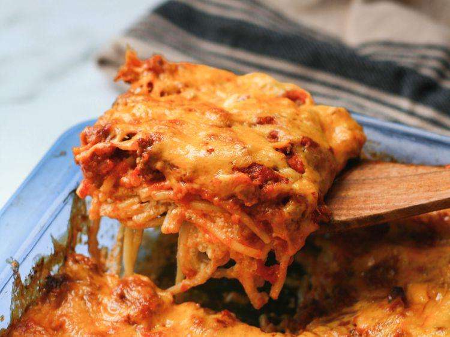

Spaghetti

Description
Ingredients
- An 8-ounce package of spaghetti should make
about eight servings.
- You'll need a pound of lean ground beef.
You can use a mix of ground beef and
ground turkey, if you prefer.
- Use a jar of store-bought spaghetti sauce
- Use a stick of sliced butter to prepare the pan
and to add richness and flavor to the baked
spaghetti.
- A mixture of cottage cheese, cream cheese,
and sour cream is essential for this decadent,
creamy spaghetti sauce.
- Shredded Cheddar cheese is the perfect
finishing touch for this million dollar spaghetti.
Steps
- Boil the spaghetti in salted water, then drain
and set aside.
- Cook the beef on the stove and discard the
grease. Transfer to a bowl and mix in the
spaghetti sauce.
- Prepare the baking dish, then spread half of
the noodles in the bottom.
- Top with the mixture of cottage cheese, cream
cheese, and sour cream.
- Cover with remaining spaghetti and butter.
- Pour the beef mixture over the spaghetti and
spread in an even layer.
- Bake for 30 minutes, top with Cheese, and
continue baking until the cheese is melted.
Home